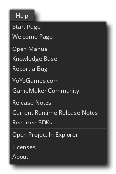

Este menú está relacionado con la obtención de ayuda al usar GameMaker Studio 2. Contiene los siguientes elementos de menú:
- Página de inicio - Esto abrirá un nuevo espacio de trabajo de Página de inicio.
- Página de bienvenida: se abrirá en la presentación de diapositivas inicial de la página de bienvenida en un nuevo espacio de trabajo.
- Abrir manual: abre el documento de ayuda. Tenga en cuenta que al hacer clic en el botón de ayuda
en la barra de menú también abrirá el documento, al igual que presionar
.
- Base de conocimientos: esto lo llevará al Centro de ayuda de GameMaker Studio 2, donde puede encontrar artículos sobre la configuración de la plataforma, problemas conocidos, el uso de GameMaker Studio 2 y una serie de otras cosas.
- Informar un error: si encuentra algún error o tiene algún problema al usar GameMaker Studio 2, puede informarlo aquí.
- YoYo Games.com - Abre la página principal de YoYo Games.
- Comunidad de GameMaker - Esto abrirá los foros de la Comunidad GameMaker en su navegador. Tenga en cuenta que este es un foro de ejecución comunitaria, por lo que si tiene un informe de error o necesita asistencia técnica, primero debe ir a los foros de soporte oficial (consulte más arriba).
- Notas de la versión: esto abrirá las Notas de la versión de GameMaker Studio 2 en su navegador. Si necesita revertir una actualización, puede obtener instaladores de versiones anteriores haciendo clic en el enlace del número de versión en esta página.
- Notas de la versión actual de Runtime: dado que Runtime puede actualizarse independientemente del IDE, tiene su propio conjunto de Notas de la versión de Runtime. Al seleccionar esta opción, se abrirán en su navegador, pero tenga en cuenta que el tiempo de ejecución actual puede no ser el que está utilizando. Para saber en qué tiempo de ejecución se encuentra, o para obtener información sobre cómo agregar, eliminar o activar tiempos de ejecución, consulte la sección Preferencias de tiempo de ejecución.
- SDK necesarios: debido a la naturaleza multiplataforma de GameMaker Studio 2, se requieren varios SDK de terceros. Al hacer clic en esto, accederá a un artículo del foro de soporte que detalla lo que necesita por plataforma.
- Abrir proyecto en Explorer - Esto abrirá la ubicación de guardado del proyecto cargado actualmente en el explorador de archivos del sistema operativo.
- Acerca de: abre la ventana "Acerca de GameMaker Studio 2 " donde puede obtener información sobre la versión del producto (esencial para informar cualquier error o problema).